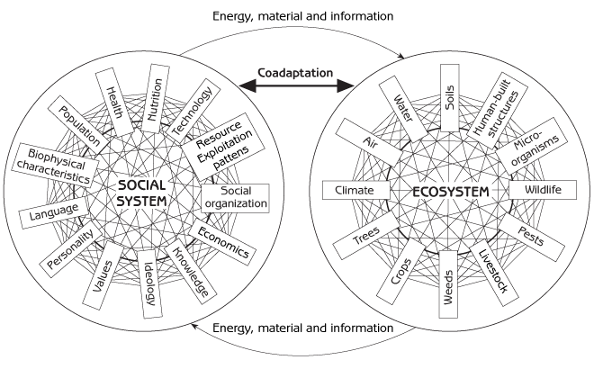
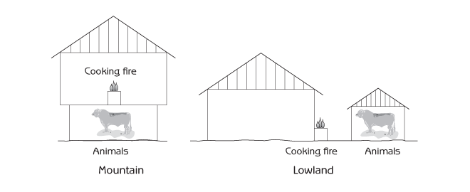
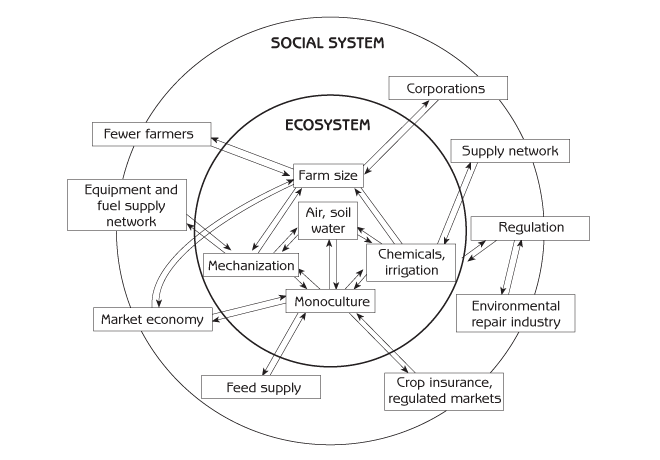
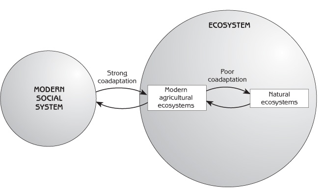

Human Ecology
Basic Concepts for Sustainable Development
Author: Gerald G. Marten
Publisher: Earthscan Publications
Publication Date: November 2001, 256 pp.
Paperback ISBN: 1853837148
Hardback SBN: 185383713X
Chapter 7: Coevolution and Coadaptation of Human Social Systems and Ecosystems
- Coadaptation in traditional social systems
- Coevolution of the social system and ecosystem from traditional to modern agriculture
- Things to think about
The last several chapters introduced some of the emergent properties of social systems and ecosystems. This chapter is about two closely related emergent properties of the interacting social system and ecosystem:
- Coevolution (changing together).
- Coadaptation (fitting together).
Chapter 5 introduced coevolution and coadaptation as an integral part of the biological evolution of plants, animals and microorganisms that live together in the same ecosystem. Coevolution and coadaptation are a game of mutual adjustment and change that never ends.
The same thing happens between humans and the rest of the ecosystem (see Figure 7.1). Human social systems adapt to their environment, the ecosystem, and ecosystems adapt to human social systems. Natural ecosystems, and the natural parts of agricultural and urban ecosystems, respond to human interventions by making adjustments that promote survival. Agricultural and urban ecosystems also evolve and adapt to the social system as people change them to fit with their changing society.

This chapter begins with two examples of coadaptation between social systems and ecosystems. It ends with the story of coadaptive changes that the Industrial Revolution stimulated between the modernizing social system and agricultural ecosystems.
Coadaptation in Traditional Social Systems
Traditional societies are a rich source of examples to illustrate coadaptation between social systems and ecosystems. Centuries of trial-and-error cultural evolution have fine-tuned many aspects of traditional social systems to their environment. The following passage contains two stories of coadaptation between social systems and disease-transmitting mosquitoes. The first story concerns the adaptation of one part of the human social system, house design, to one aspect of the ecosystem, mosquitoes and malaria. The second story is about adaptation of one component of the ecosystem, mosquitoes, to one aspect of the social system, pesticide technology. The example in the subsequent passage concerns the use of fire by Native Americans to modify their landscape mosaic.
Coadaptation of people and mosquitoes
Approximately 100 years ago, the French moved large numbers of people in colonial Vietnam from the lowlands to the mountains. They wanted more people in the mountains to cut forests, work on rubber plantations and work at tin mines. Unfortunately, many lowland people died of malaria when they were forced to live in the mountains. This was surprising, because malaria had not been a serious problem in Vietnam. Malaria is transmitted by mosquitoes but, fortunately for lowland people, the species of mosquito that breed in the vast rice fields of the lowlands do not transmit malaria. Although the mountains have malaria-transmitting mosquito species, the disease was never a serious problem for the mountain people, who lived there for many generations. Because of malaria, the French never succeeded at moving large numbers of lowland people to the mountains.
Why did lowland people get malaria when mountain people did not? The reason was a difference in culture. Mountain people build their houses raised above the ground, keep their animals such as water buffalo below the house and have their cooking fire inside the house (see Figure 7.2). Mosquitoes fly close to the ground, prefer to bite animals instead of people and are repelled by smoke, so they seldom enter the raised, smoke-containing houses of the mountain people, and bite the animals beneath the houses instead of the people.
Lowland people build their houses right on the ground, keep their animals away from the house and cook outside (see Figure 7.2). When lowland people moved to the mountains, they continued to build their houses and cook in the traditional way. Mosquitoes easily entered the ground-level, smoke-free houses and bit the people within the houses because there were no animals to attract them away. The lowland house design worked well in the lowlands but was not adapted to the mountain ecosystem.

The mountain people were protected from malaria without realizing that mosquitoes transmit the disease. At that time, before scientists discovered the role of mosquitoes in malaria transmission, people everywhere in the world believed that malaria was caused by spirits or contaminated water. If mountain people were asked why they built their houses in a specific way, they would say it is tradition. Their house design was a product of centuries of cultural evolution that adapted their buildings to all of their needs, including health.
In 1940, scientists invented DDT, an effective insecticide against mosquitoes that transmit malaria. Because malarial mosquitoes rest on house walls, and because DDT stays on surfaces for months after it is first applied, it was possible to kill almost all of the mosquitoes by spraying house walls with DDT just a few times a year. The World Health Organization mounted a global DDT campaign against malaria in the 1950s, and at first it worked perfectly. Malaria almost disappeared by the end of the 1960s. However, the mosquitoes came back during the 1970s, and so did malaria. About 500 million people now suffer from malaria worldwide each year, and several million of them die.
Mosquitoes returned because they evolved a resistance to DDT. A few mosquitoes had a genetic mutation that protected them from DDT. After DDT went into heavy use, this DDT-resistant gene spread quickly through the mosquito populations because mosquitoes with the resistant gene survived when other mosquitoes were killed. There was also a behavioural mutation in some regions. The mosquitoes started to rest on vegetation outside of houses instead of on house walls sprayed with DDT. DDT was not a sustainable technology for malaria control. But what about other insecticides? DDT is very inexpensive; however, all other insecticides are too costly for large-scale use against malarial mosquitoes. Most countries gave up on controlling the disease, and there has been little progress in controlling malaria since then. The use of anti-malarial drugs has reduced fatalities in some areas, but many of these drugs no longer work because the malarial parasite has evolved a resistance to them.
A detailed account of the coadaptation of people and mosquitoes is found in Chapter 12.
Controlled burning by Native Americans
The example of forest fire protection in Chapter 6 explained how the United States Forest Service learned the value of controlled burning for forest management. This is something that Native Americans knew long before Europeans came to North America. Because Native Americans coevolved with North American ecosystems for thousands of years, their social system and their technology for using the land were highly adapted to a sustainable relationship with the environment. Controlled burning was an integral part of their forest management. They started fires because they knew that frequent fires were a way to maintain healthy forest ecosystems. They also used controlled burning to create small patches of other ecosystems, such as grassy meadows. A landscape mosaic comprising different stages of ecological succession provided more wild plants and animals as food sources than a landscape with only forest. When Europeans came to North America, they made numerous mistakes because their social system was not adapted to North American ecosystems. (Chapter 10 provides some examples of environmental consequences due to cultural differences between Europeans and Native Americans in North America.)
Coevolution of the Social System and Ecosystem from Traditional to Modern Agriculture
Ecosystems adapt to human social systems in two ways:
- Ecosystems reorganize themselves in response to human actions.
- People change ecosystems to fit their social system.
The mosquito example illustrated how natural ecosystems reorganize themselves. Mosquitoes evolved DDT resistance in response to a high death rate imposed by DDT. The natural components of agricultural and urban ecosystems also adapt to human actions by reorganizing themselves. The parts of agricultural and urban ecosystems that are organized by people change with the social system because people change them. People make agricultural and urban ecosystems to fit their social system, and people adjust their social system to fit with their agricultural and urban ecosystems. The modernization of agriculture after the Industrial Revolution illustrates coevolution of the social system with agricultural ecosystems.
Before the Industrial Revolution, people were very much aware of environmental limitations. Their culture, values, knowledge, technology, social organization and other parts of their social system were by necessity closely adapted to nature. Most people were small-scale subsistence farmers; most of the agricultural production was for home consumption. Most families had a variety of farm animals and cultivated many different crops to meet the family’s needs for food and clothing. Agricultural techniques were adapted to local environmental conditions. The amount of land that each family could cultivate was limited by the large amount of human or animal labour that was necessary for agriculture. Most farmers used polyculture - a mixture of several crops together in the same field. The agricultural ecosystems in Figure 6.11 are polycultures.
Polyculture had a number of advantages:
- It protects the soil from erosion, and can maintain soil fertility without the use of chemical fertilizers. The mixture of different crop species in a polyculture creates a large quantity of vegetation, which covers the ground completely. In contrast, it is common for a monoculture (one crop) field to have a lot of bare ground. The large quantity of vegetation in polyculture protects the soil from falling rain, thereby reducing soil erosion. The vegetation also provides substantial amounts of organic fertilizer when the unused part of the crop is ploughed back into the soil. If some of the plants in the field are legumes (for example, beans or peas), bacteria in the roots of the legumes convert atmospheric nitrogen to forms that plants can use.
- It provides natural pest control. Agricultural pests are usually specific to a particular kind of crop. For example, if a field is 100 per cent corn monoculture, corn pests multiply to large numbers and inflict a lot of damage if pesticides are not used. However, if a field has many different crops, with only a few corn plants, the corn pests have trouble finding their host; as a result, they are unable to multiply to large numbers and the damage is limited. Polyculture also provides good habitat for animals such as birds and predatory insects that eat insect pests. Predators provide natural control of the pests. When chemical pesticides are used in modern agriculture, many of the predators are killed, and much of the natural pest control is lost.
- It allows farmers to diversify their risks. If the weather during one year is bad for some kinds of crops, it will probably not be bad for all crops. If market prices are low for some crops, the prices will probably be better for other crops.
Agriculture changed in Europe when the Industrial Revolution made it possible to use machines instead of human and animal labour for work such as ploughing fields and harvesting crops. Starting with mechanization, the chain of effects can be traced through Figure 7.3. Machines gave farmers the ability to cultivate larger areas of land. Farm sizes increased dramatically because mechanized agriculture is more efficient on a larger scale (economy of scale). These initial changes in the social system and the ecosystem set in motion a series of changes through interconnected positive feedback loops in the ecosystem and social system.

When farm sizes increased, farmers were able to produce more than they needed for their own families, so they changed from subsistence farming to a market economy. Larger farm size also meant that there was surplus production to support cities. Many people got out of farming and moved to cities, where economic opportunities were better.
One of the main changes in the ecosystem was from polyculture agriculture to monoculture. With mechanization, farmers stopped mixing crops together because farm machines work best with single crops. The market economy also provided an incentive to change from polyculture to monoculture because producing and marketing a single crop was more convenient for farmers. The change from polyculture to monoculture led to many other changes. Monoculture did not protect the soil from erosion or maintain soil fertility as well as polyculture did. Risks of crop failure due to bad weather or pest attacks were also greater with monoculture because ‘all the eggs were in one basket’. As a result, it was important to make agriculture more independent of the environment by means of irrigation, chemical fertilizers and pesticides - all of which were possible with new developments in science and energy from fossil fuels.
Governments gradually became involved in research to provide better technology for the new style of agriculture: improved crop varieties to provide higher yields with high inputs (chemical fertilizers, pesticides, etc), as well as better techniques for using the inputs. Commercial networks were set up to provide machines, chemicals and high-yield crop seeds to farmers. Government crop insurance and market regulation, including government subsidies, were developed because of the higher risks associated with monocultures.
The improvements in technology made monoculture even more advantageous compared to polyculture. Because different plants have different growth requirements, conditions in a polyculture field cannot be optimal for all of the different species of plants that grow together. Specialization through monoculture made it easier for a farmer to use high inputs to provide optimal conditions to attain the highest yields with one particular crop.
Farmers changed their belief system - their worldview. Once the Industrial Revolution was underway, technology, machines and fossil fuels seemed to free people from many environmental limitations. People began to think of agriculture more in economic terms, as a business enterprise, and less in environmental terms. Everyone believed that the future was going to provide advances in science and technology that offered endless possibilities for capital accumulation and economic development. Eventually, many farms were taken over by large corporations, and agriculture became more and more ‘vertically integrated’. Today many of the same corporations that own supermarkets also own the farms and food processing factories that supply their supermarkets with food.
People eventually had to make changes to their beliefs as the environmental and human health implications of pesticides and chemical fertilizers became apparent in recent years. Governments began to regulate the use of chemicals, and they conducted research on how to deal with the consequences of applying chemicals. A new environmental industry arose in the private sector to deal with pollution from agriculture and other sources.
Throughout history, social systems and agricultural ecosystems have changed in ways that have allowed them to continue functioning well together. The same is generally true today. Modern social systems and agricultural ecosystems continue to change together and they are strongly coadapted (see Figure 7.4). The problem today is that modern agricultural ecosystems have lost their coadaptation with the natural ecosystems that surround them - natural ecosystems upon which the agricultural ecosystems depend for their long-term viability. Modern agricultural ecosystems rely on large-scale fertilizer and pesticide inputs from natural sources that may not be sustainable on such a scale, and they pollute surrounding ecosystems with fertilizer and pesticide runoff from fields. Modern agricultural ecosystems also depend upon natural ecosystems for massive inputs of energy and, in many instances, irrigation water, which may not be possible to sustain.

The recent popularity of organically grown foods is stimulating a return to agricultural ecosystems that are more compatible with natural ecosystems. Organic farmers are returning selectively to traditional farming methods while employing organic fertilizers and environmentally benign methods of pest control. Their agricultural ecosystems are not dependent on chemical inputs, and the pollution of surrounding ecosystems is minimal. As the market for organically grown foods continues to expand, agricultural scientists and farmers will be stimulated to develop new and ecologically sound agricultural technologies.
Things to Think About
- Look at the story about “coevolution of the social system and ecosystem from traditional to modern agriculture” on pages - . List what happened for each arrow in Figure 7.3.
- Talk to a farmer to learn how agricultural ecosystems in your region have changed during the past fifty years. Ask the farmer about:
- material inputs fifty years ago and how the material inputs have changed since then.
- changes in the organization and structure of the agricultural ecosystems and how cultivation methods and energy inputs have changed during the past fifty years.
- Associated changes in the social system (eg, changes in farmer life styles, organization of the local community, farm ownership, agricultural associations and marketing of farm products, food imports, the role of national government).
- Think about input/output exchanges and other interactions of agricultural and natural ecosystems in your region. Do the agricultural ecosystems seem to be well coadapted to the natural ecosystems? Do they have a sustainable relationship with the natural ecosystems?
- In what ways is your neighbourhood (or town) social system coadapted with the local environment? In what ways is your national social system coadapted with the environment? In what ways are these social systems poorly coadapted with their environments?